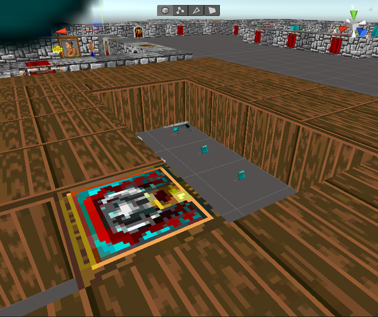
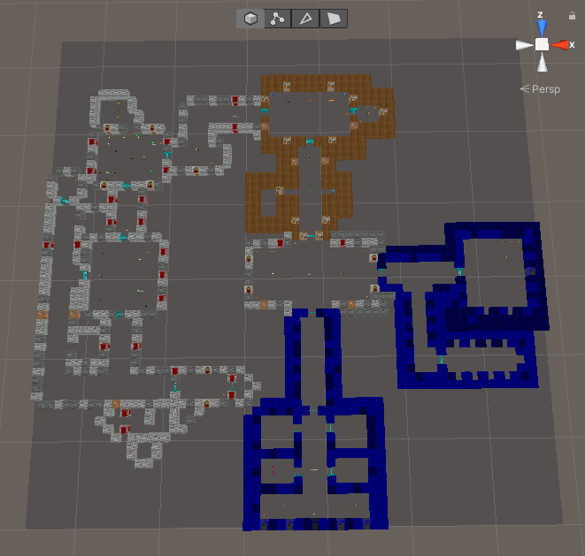
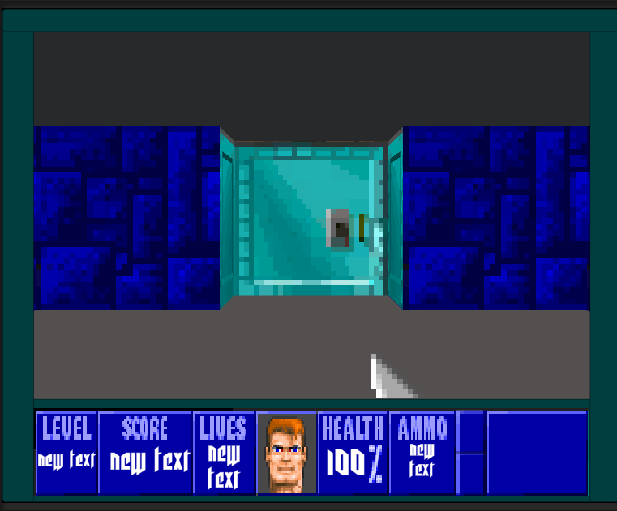
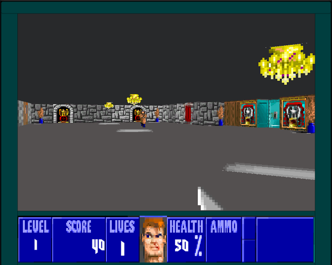
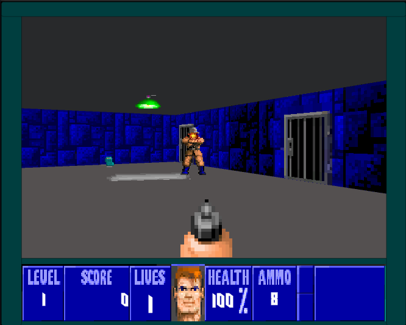
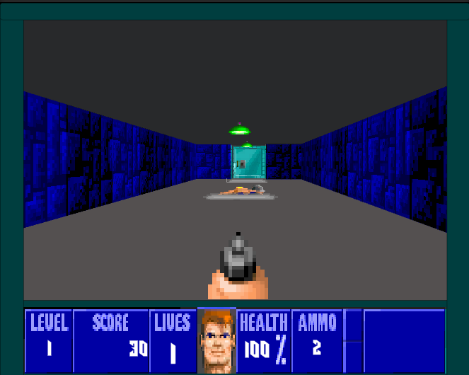
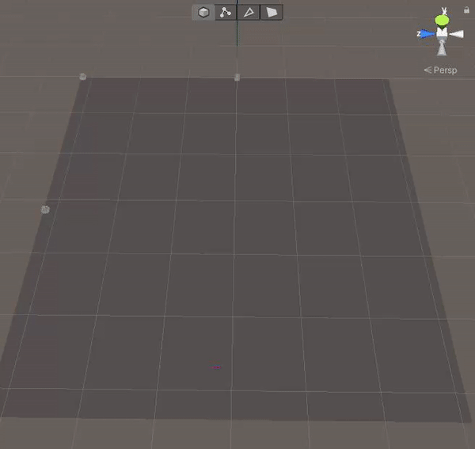

<!DOCTYPE html>
<html>
</html>
<head>
  <meta charset="utf-8">
  <meta http-equiv="X-UA-Compatible" content="IE=edge">
  <title>Wolfenstein</title>
  <meta name="description" content="">
  <meta name="viewport" content="width=device-width, initial-scale=1">
  <meta name="robots" content="all,follow">
  <!-- Bootstrap CSS-->
  <link rel="stylesheet" href="vendor/bootstrap/css/bootstrap.min.css">
  <!-- Font Awesome CSS-->
  <link rel="stylesheet" href="vendor/font-awesome/css/font-awesome.min.css">
  <!-- Google fonts - Roboto-->
  <link rel="stylesheet" href="https://fonts.googleapis.com/css?family=Roboto:400,300,700,400italic">
  <!-- owl carousel-->
  <link rel="stylesheet" href="vendor/owl.carousel/assets/owl.carousel.css">
  <link rel="stylesheet" href="vendor/owl.carousel/assets/owl.theme.default.css">
  <!-- theme stylesheet-->
  <link rel="stylesheet" href="css/style.red.css" id="theme-stylesheet">
  <!-- Custom stylesheet - for your changes-->
  <link rel="stylesheet" href="css/custom.css">
  <!-- Favicon-->
  <link rel="shortcut icon" href="img/favicon.png">
  <!-- Tweaks for older IEs--><!--[if lt IE 9]>
    <script src="https://oss.maxcdn.com/html5shiv/3.7.3/html5shiv.min.js"></script>
    <script src="https://oss.maxcdn.com/respond/1.4.2/respond.min.js"></script><![endif]-->
</head>
<body>
  <div id="all">
    <div class="container-fluid">
        <div class="row row-offcanvas row-offcanvas-left">

            <!--   *** SIDEBAR ***-->
            <div id="sidebar" class="col-md-4 col-lg-3 sidebar-offcanvas">
                <div class="sidebar-content">
                    <h1 class="sidebar-heading"> <a href="index.html">Luke Barsby</a></h1>
                    <p class="sidebar-p">Recent Games Developer graduate, working on projects</p>
                    <p class="sidebar-p">Located in West Midlands.</p>
                    <ul class="sidebar-menu">
                        <!-- Link-->
                        <li class="sidebar-item"><a href="index.html" class="sidebar-link">Portfolio</a></li>
                        <!-- Link-->
                        <li class="sidebar-item"><a href="about.html" class="sidebar-link">About Me</a></li>
                        <!-- Link-->
                        <!--<li class="sidebar-item"><a href="contact.html" class="sidebar-link">Get in touch</a></li> -->
                    </ul>
                    <p class="sidebar-p">Get In Touch</p>
                    <p class="social"><a href="https://twitter.com/BarsbyDevelopm1" data-animate-hover="pulse" class="external twitter"><i class="fa fa-twitter"></i></a><a href="mailto:luke.barsby@hotmail.co.uk" data-animate-hover="pulse" class="email"><i class="fa fa-envelope"></i></a></p>
                    <p class="sidebar-p">This website is currently under maintenance</p>
                </div>
            </div>
            <!--   *** SIDEBAR END ***  -->
            <!--   *** DETAIL ***-->
            <div class="col-md-8 col-lg-9 content-column white-background">
                <div class="small-navbar d-flex d-md-none">
                    <button type="button" data-toggle="offcanvas" class="btn btn-outline-primary"> <i class="fa fa-align-left mr-2"></i>Menu</button>
                    <h1 class="small-navbar-heading"> <a href="index.html">Luke Barsby </a></h1>
                </div>
                <div class="row">
                    <div class="col-xl-10">
                        <div class="content-column-content">
                            <h1>Wolfenstein 3D</h1>
                            <p class="lead">As a small challenge for myself, I decided to try and re-create Wolfenstein 3D as quickly as possible.</p>
                            <blockquote class="blockquote">
                                <p class="mb-0">I do not own any rights to the sprites used for this project, It was created with no intent to share, publish or profit from.</p>
                            </blockquote>
                            <div id="main-slider" class="owl-carousel owl-theme">
                                <div class="item"></div>
                                <div class="item"></div>
                                <div class="item"></div>
                                <div class="item"></div>
                                <div class="item"></div>
                                <div class="item"></div>
                            </div>
                            <!-- /#main-slider-->
                            <p>For this project, I initially gave myself 48 hours, and during that time I got most of the foundations in place. I had:</p>
                            <ol>
                                <li>All Textures and Materials created for player, enemies and environments</li>
                                <li>Re-creation of the level using Pro-Builder</li>
                                <li>Simple door controllers</li>
                                <li>Basic enemy Ai</li>
                                <li>A Player controller that could die, walk and shoot</li>
                            </ol>
                            <p>But the game was far from finished in this state.</p>

                            <blockquote class="blockquote">
                                <p class="mb-0">Wolfenstein Re-visited</p>
                            </blockquote>
                            <h2>Updates</h2>
                            <p>
                                I didn't like leaving the game in the state it was in, so I decided to re-visit its development of it. I accomplished a lot in the 48 hours but a lot was missing from the game and because of the timeframe I gave myself, a lot of the programming was in a ""prototyping stage" and quickly done
                            </p>
                            <p>
                                During the re-visit of the game, I added all areas that were missing, in addition to, refactored all the programming in the project to make it more efficient, structured and decoupled. Items that were added were:
                            </p>
                            <ul>
                                <li>Sound Manager</li>
                                <li>Game Manager (Win/Lose & score/life keeping)</li>
                                <li>Pickup system</li>
                                <li>Ingherited Weapon system</li>
                                <li>Inherited Enemy system With more Enemies</li>
                                <li>Secret rooms</li>
                                <li>Map generation</li>
                            </ul>
                            <p>
                                One part of this project that I liked was the map generation system I created. It took a while to block out the first level and during this time I wanted to create a streamlined process to generate maps in the future.
                            </p>
                            <p>
                                As this was a game re-creation, I had access to all level designs in the game. For this, I made a system which takes in a bird's-eye view image of the map and then scans each block in a 7x7 pixel area, generating a block in the same position of the texture scanned. This compares it to a list of  textures/prefabs that correlate to that pixel area and generate the correct block/object/Enemy. The system isn't perfect and could be improved but it successfully works in generating each map at playtime, with placements of every wall, enemy, pickup or door. Here is a gif of the generation running with a coroutine slowing down the generation process:
                            </p>
                            
                            <p class="lead"></p>
                            <p class="lead">
                                Generated from this image:
                            </p>
                            
                        </div>
                    </div>
                </div>
            </div>
        </div>
    </div>
  </div>
  <!-- JavaScript files-->
  <script src="vendor/jquery/jquery.min.js"></script>
  <script src="vendor/popper.js/umd/popper.min.js"> </script>
  <script src="vendor/bootstrap/js/bootstrap.min.js"></script>
  <script src="vendor/jquery.cookie/jquery.cookie.js"> </script>
  <script src="vendor/owl.carousel/owl.carousel.min.js"></script>
  <script src="vendor/masonry-layout/masonry.pkgd.min.js"></script>
  <script src="js/front.js"></script>
</body>